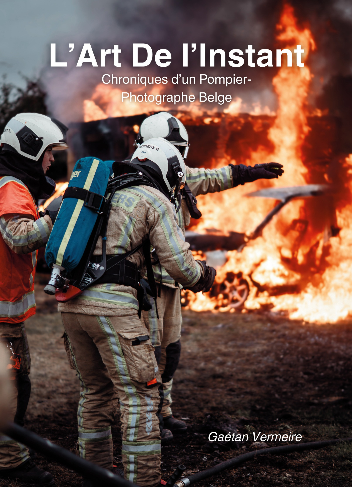

Passion
Parcours
Un rêve qui traverse les flammes
Ce livre raconte la persévérance, les détours et l’envie de continuer à créer malgré les contraintes du quotidien.
Des livres nés du terrain et de l’humain : récits, photographies, carnets et projets autour du métier de pompier-ambulancier, de la transmission et de ces instants qu’on ne peut pas rejouer.

Chronique d’un pompier-photographe belge
Un récit personnel et visuel sur le regard, le feu, la photographie de reportage et la persévérance. Un livre écrit depuis le terrain, avec la sensibilité d’un pompier-ambulancier et l’œil d’un photographe.
Choisissez d’abord la langue du site et le pays Amazon en haut à droite. Ensuite, choisissez la langue du livre. Le bouton Amazon s’adapte automatiquement.
Le pays Amazon est celui choisi en haut du site. Ici, vous choisissez simplement l’édition linguistique du livre.
L’Art de l’Instant n’est pas seulement un livre de photos. C’est une trace : celle d’un regard, d’un parcours et d’une manière de transmettre le terrain.
Ce livre raconte la persévérance, les détours et l’envie de continuer à créer malgré les contraintes du quotidien.
Chaque image devient une façon de retenir l’instant, de documenter l’action et de donner un visage à ce qui passe trop vite.
Le livre est nourri par l’expérience d’un pompier-ambulancier professionnel à Bruxelles, entre mission, discipline et humanité.
Sans héroïsme forcé, le livre cherche à montrer ce qui se joue derrière l’uniforme : l’effort, le doute, la présence et le sens du service.
Gaétan Vermeire est auteur, photographe et pompier-ambulancier professionnel à Bruxelles. Son travail mêle écriture, regard documentaire et expérience de terrain.
Ses livres explorent ce que l’urgence révèle : l’humain, la discipline, la fragilité, la persévérance et les silences que l’on garde parfois après l’intervention.
Lookfavor est un nom inventé autour d’une idée simple : la vue est une faveur. Voir n’est pas seulement regarder. C’est apprendre à percevoir ce que d’autres ne remarquent pas toujours, même avec les yeux ouverts.
C’est cette attention au détail, à l’instant et à l’humain qui guide l’univers éditorial de Gaétan Vermeire.
Les coulisses, les images, les prochains livres et les projets autour de l’univers pompier sont partagés en priorité sur Instagram.
Pour suivre le projet ou me contacter, le point d’entrée le plus simple reste Instagram.
Ouvrir InstagramCette vitrine est pensée pour accueillir les prochains projets éditoriaux de Gaétan Vermeire.
Un carnet inspiré de la vie de caserne pour noter les gardes, les apprentissages, les interventions marquantes et les progrès personnels.
Un outil pour accompagner les candidats pompiers dans leur préparation, leur discipline, leur mental et leur organisation.
Un support pratique pour structurer l’entraînement, suivre ses progrès et avancer avec méthode vers les épreuves.
Un livre immersif et sans image sur l’envers du décor : le vécu de pompier, ce que le public ne voit pas, les émotions, les doutes, les leçons et les silences du métier.